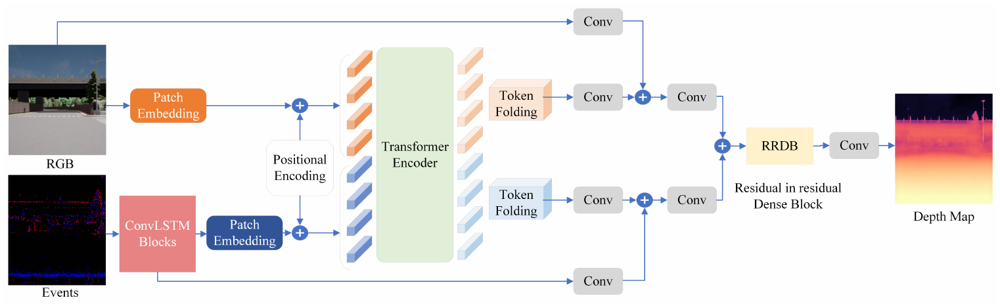

Adaptive multimodal perception
Robots and vehicles carry several sensors, but fusing all of them on every frame costs latency and energy even when one adds little.
Depth from RGB and event cameras, with a gate that decides
Pairs a frozen depth foundation model with an event transformer. A lightweight gate chooses RGB-only, event-only or fused inference for each input, so the event branch runs when it helps most: low light, motion blur and sparse frames. Evaluated on MVSEC and DSEC.
Accuracy within 1% of always-on fusion, with about 8% lower latency by day, 12% at night, and 22% less GPU energy in RGB-only mode.

One transformer for events and RGB
A unified transformer that fuses event and RGB data for monocular depth estimation. Events pass through ConvLSTM blocks to keep their timing, then both modalities share one transformer encoder instead of running two.
Nearly half the runtime memory of prior fusion work (340 MB vs. 652 MB).
Related: a first-author review of event-based vision sensor fusion (Neuromorphic Computing and Engineering, 2026), transformer-based GANs for robust multimodal depth (ACM Multimedia 2022), and spiking and hybrid networks for energy-efficient depth on edge devices (ISVLSI 2024, ICONS 2025).